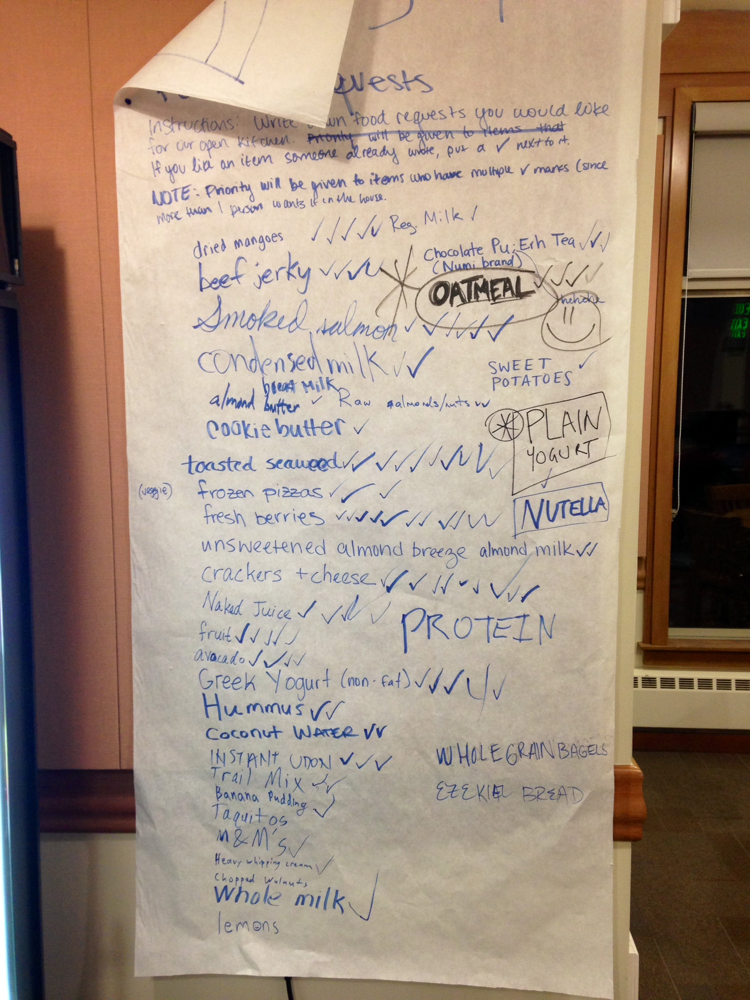

Pantry
Winter 2014 · Stanford, CA
Overview
Pantry is a collaborative web app used to keep track of items and ingredients in a shared kitchen. The project was my first foray into interaction design.
Role
Designed mobile web app and interactions and contributed some to front-end development. Performed heuristic evaluations and user testing.
Scope
7 weeks
Teammates
Andy Lamb, Ian Campbell
Categories
UX design, Front-end development, Print design
Challenge
The Unorganized Kitchen
In shared kitchens, there's often a gap in how the kitchen is managed: with many people sharing a kitchen and its contents, it's often difficult to properly restock and keep track of foods and ingredients. Even when there is someone designated, with so many opinions in play, there must be a better solution.
This problem is evident in many dorms on Stanford's campus. Even with a kitchen manager to help manage the snacks and ingredients available in open kitchens, things often get dirty, and it's difficult to figure out what groceries need to be bought.
Our dorm's chaotic grocery list.
Approach
Iterating on Our Idea
Seeing the dorm's wish list for foods grow more unruly week after week, we were inspired to do something about it. Looking at the check marks of support, we figured we could translate the dorm's grocery list to an online version with upvoting and downvoting à la Reddit. Before long, we had also incorporated a way to keep track of foods already in the pantry, as well as a recipe generator based on available ingredients.
In designing and developing Pantry, we leveraged Google Analytics to do some A/B testing on our voting features. We also performed some heuristic evaluations with our target users to find room for improvement in our app's interface.


Solution
The Final Product